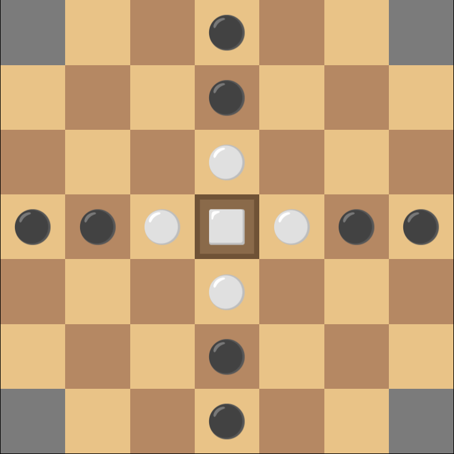
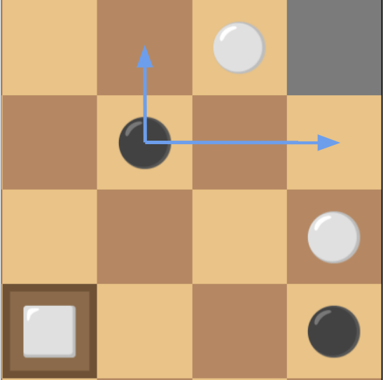
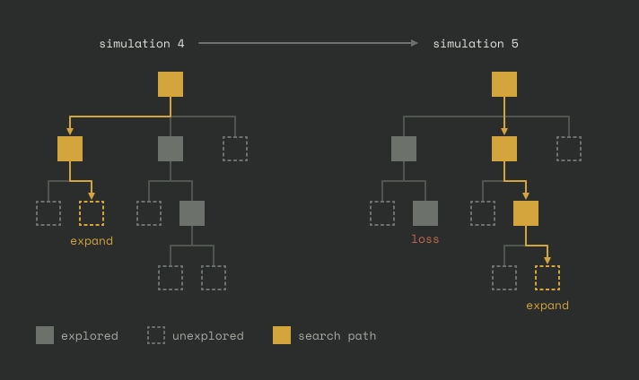
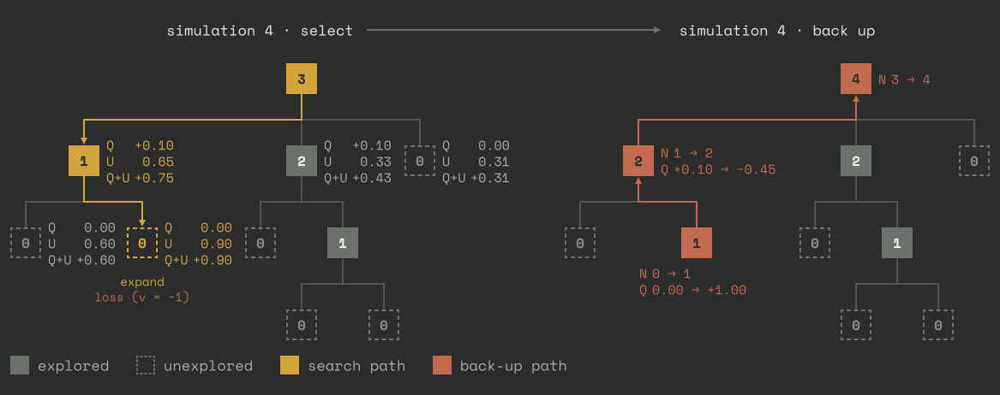
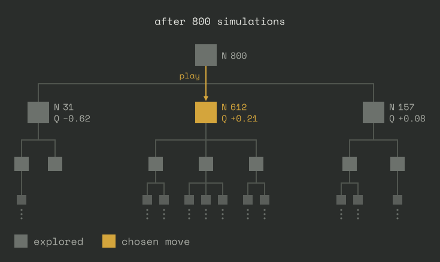
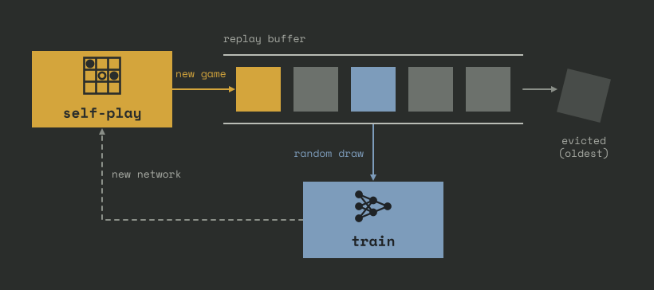

Part 2 of these notes can be found here.
Covered concepts
| Concept | Explanation |
|---|---|
| Brandubh | The small 7x7 board game used as the example, where attackers try to capture a king before it escapes to a corner. |
| Monte Carlo Tree Search (MCTS) | An algorithm for guided exploration of a game tree, looking for optimal actions. |
| MCTS simulations | A single guided path-selection through the game tree, stopped after an unexplored move is reached. |
| Reinforcement Learning (RL) | A flexible machine learning method for training an agent in a defined environment on specific rewards (like winning games). |
| Board encoding | Design decision on how to represent the game board, usually through one-hot encoding. |
| Move temperature ($\tau$) | Decides how likely non-top moves are to be played. $\tau=0$ deterministically plays the top recommended move. |
| "Zero" engine | An engine that learns entirely from self-play, with no human games or game-specific advice. |
| Policy head ($P$) | The network output that suggests which moves are worth exploring. |
| Value head ($V$) | The network output that predicts which player is in the lead. |
| Action value ($Q$) | The average value found below a move (how well that move has done so far). |
| Upper confidence bound ($U$) | An exploration bonus that favors moves the policy likes but the search has rarely visited. |
| Self-play | The engine plays against itself to generate its own training data. |
| Backup | Passing a new evaluation back up the search path, updating the visit count and $Q$ at each node. |
| Replay buffer | A store of recent positions that training samples from at random, so the network doesn't only learn from its latest games. |
| Value-policy bootstrap | How the two heads gradually teach each other, starting from an untrained network. |
1. Intro
These notes will explain how to build a Monte Carlo Tree Search (MCTS) game engine, and train it with Reinforcement Learning (RL). This reflects how chess engines like AlphaZero and Leela Chess Zero are trained.
These notes are meant partially as a pedagogical intro, and partially as a reference manual for all the various concepts and optimizations you might want to try if you are building an MCTS engine.
Because chess is such a thoroughly explored game, I will use another example: A little known game called Brandubh. If you are uninterested in this, simply skip ahead to Neural Networks, it should be possible to follow the text without understanding Brandubh.
"Zero" engines
The setup I describe will produce a "zero" engine, like AlphaZero and Leela Chess. Zero refers to the fact that these engines are trained entirely on self-play, having "zero" direct human intervention. They are not trained on any human games, and there is no hard-coded "advice" or tactics from human experts embedded in the algorithm. There is always some debate about exactly where the zero-line is drawn, and what constitutes human intervention.
The "zero" concept strongly distinguishes the MCTS RL engines from the more traditional Minimax alpha/beta pruning engines, like Stockfish. These rely on highly tuned and hand-crafted rules for quickly selecting between good and bad moves, called "heuristics"Stockfish now uses a neural network for its evaluation instead of human-made heuristics, but still involve a lot of human "non-zero" involvement in how its pruning and search works, value of pieces etc. Ironically, its neural network is largely trained on Leela Chess data..
The zero-concept is, in my opinion, much more appealing than hand-crafted heuristics, because the engine learns to play completely on its own. There's a much larger chance it plays less like a human, and when it does play like a human it is because it discovered the same rules on its own, testing them against itself!
The rules of Brandubh
A few different variations of the game exist. For a complete reference of the Brandubh 2.0 ruleset, see this leaflet.
- Brandubh is played on a 7x7 board, with 8 attacking pieces (black) and 5 defending pieces (white), including the king, located at the center of the board.
- All pieces move like rooks in Chess, vertically or horizontally as far as they want, but not onto or through other pieces.
- A piece is captured by being caught, horizontally or vertically, between two hostile squares, during the turn of the opponent. Hostile squares are squares with opponent pieces, the four corners, and the central "throne" square (when un-occupied).
- The central square, the throne, is not hostile to the king (cannot be used in capture of the king), and only the king can move into it, although other pieces can move across it.
- The attackers win by capturing the king.
- The defenders win by escaping the king to one of the four corner squares. Other pieces cannot occupy the corner squares.
- When the king is on the throne, he can only be captured by 4 surrounding pieces.
- The king otherwise moves, captures, and is captured like other pieces.
- Attackers (black) move first.


2. The neural network engine
The policy and value heads
At the center of the engine is a neural network which takes the current board state ($s$) as input and has (at least) two outputs, referred to as "heads":
- The policy head (the "actor"), $P(s,a)$: A prediction of how good each move ($a$) is at the current board state. Its job is to recommend what moves are worth looking into.
- The value head (the "critic"), $V(s)$: A prediction, between $-1$ and $+1$, of which player is currently in the lead.
An interesting insight is that the jobs of the value and policy heads are actually not that dissimilar: You could ask the value head what it thinks of the current board compared to the board after each of your legal moves. If the network is well trained, this should agree quite well with the moves recommended by the policy head. You could therefore ask yourself why not just have only a value head. One reason is that this would require running the NN on tens of different board states (i.e. 40 legal moves in the starting position of Brandubh), while the policy head gives you an indication from only a single forward pass. We will also see later that the policy and value heads do well in combination.
Input and output encodings
A key part in neural network design is choosing a sensible encoding, which means how to represent its input and output.
Input encoding
The input encoding is relatively straightforward: Use one one-hot encoded board (see below) for each piece type. In Brandubh that's only three layers; (i) attacker soldiers (ii) defender soldiers (iii) defender king. You also need some input telling you which turn it is, and any other rule that cannot be directly inferred from looking at the board, like how many repetitions have happened.
Output encoding
Output encodings have more genuine design choices, with the optimal choice being less obvious, and depending on the properties of the game. The first half is relatively straightforward: Picking what pieces to move. Virtually every output encoding does this by one-hot encoding the entire board (for us $7\times 7$).
How to encode where to move the piece is trickier: You can also one-hot encode the entire "move to" board as another $7\times 7$ plane. However, you cannot simply stack these two vectors together into one $7\times 7 + 7\times 7 = 98$ element output, because the network cannot communicate which piece is supposed to move whereIf its "move from" vector says A4=0.29, B3=0.25, and D5=0.23, and its "move to" vector says B4=0.51, A3=0.21, you just know that it really wants to move some piece to B4, but no idea which piece.. You must instead encode the explicit combined move-from-to output of size $7\times 7\times 7\times 7$, allowing the network to say "I want to move that piece there", solving the problem.
This probably works fine, but the output is quite large, at 2401 elements. There are two ways we could prune this size without losing gameplay-performance:
- Most of the "to" moves are always illegal. In Brandubh, all pieces move like rooks, so from e.g. B3 only the other X3 and BX squares can be reached. Simply pruning all impossible "to"-squares for each "from" square reduces the encoding to 588 elements.
- We can encode relative movement instead of squares: Each piece can, at most, move 6 tiles in any of the 4 cardinal directions. Instead of encoding the end-square of the piece, we can encode "move X steps in direction Y". That gives a "to-from" encoding of size $7\times 7\times 6 \times 4 = 1176$ elements.
The decision between the two should probably be made from what sort of network is employed: If we employ a convolutional neural network (CNN), we should do option 2: CNNs are inherently relational, preferring relative statements such as "move 4 up" as opposed to "move to this square". If we instead use a network architecture like a transformer, option 1 is likely better, as these see the board in "absolute" instead of relative terms. ⓘFor a game like Brandubh the relative encoding and CNNs are plausibly superior. Chess is less certain because it has so many different pieces that move in different ways. AlphaZero used relative encodings (option 2) and CNNs. Leela Chess now uses transformers instead of CNNs, and uses option 1 for its encoding.
Note that, as is common with output encodings, many (if not most) of the possible move encodings are illegal, and these are simply ignored even if the network gives them non-zero values, and the legal moves are re-normalized to 1.
When you are encoding something like chess pieces you could represent the pieces of each player as an 8x8 grid of integers [0,6], 0=empty, 1=pawn, 2=bishop, etc. This is a natural but horrible idea, and it's easy to understand why: Say the network has some nodes/weights/logic dedicated to knight moves, and understanding forks. This logic must activate when seeing a value 3, but not activate when seeing 0, 1, 2, 4, 5, and 6. You are asking the network to create highly non-linear responses just to decode the board pieces. The solution is one-hot encoding, where every piece type gets their own board, consisting only of 0s and 1s. The input will be 6x as large, but the network can now much more easily read off pieces and the logic of the board. In general, whenever you can take a concept that the network would have to figure out itself and instead make it an input, it's often worth it.
Neural Network architecture
Convolutional Neural Networks
Convolutional Neural Networks (CNNs) use network layers with special convolutional kernels. This works well for anything with a relational 2D (or higher) structure, such as images, or board games. The $N\times N$ convolutional kernels can learn to capture specific board features, like "close to edge" or "threatens a piece". The unique thing about these CNN kernels is that the same kernel is convolved across the entire board, such that a concept like "threatening a piece on my left" can be more easily abstracted away, and does not have to be learned independently for every square on the board.
CNNs are likely a good choice for a game like Brandubh, and kernels of size $3\times 3$ are probably more than enough, as they can convey information across the board in only a few layers of depth. Since all the pieces move as rooks, one could also experiment with some sort of $1\times N$ and $N \times 1$ kernels, to create better vision across an entire lane.
Transformers
Transformers, the architecture in modern LLMs, use a mechanism called attention. This mechanism is not too dissimilar to the convolutional kernels, in that they convey relational information between different squares, but attention has two potential advantages for our purposes:
- The attention mechanism can look anywhere on the board, which would require a very costly large kernel for CNNs.
- The attention mechanism works on a more abstract content-dependent space than CNN kernels. For example, it can have an attention head dedicated to conveying the position of the king.
The attention mechanism is excellent at far-reaching and complicated patterns, like forks, castling rules, etc. For such a small board and simple rules as Brandubh, we likely won't see the full potential of this type of architecture, and it's plausible that a CNN can capture the relevant tactics for cheaper.
3. Monte Carlo Tree Search
Monte Carlo Tree Search (MCTS)The original versions of MCTS, as the name suggests, estimated each new position by playing random games to the end. Modern engines replace this with the value head, which makes the search deterministic. This is the version I will explore. is a way of parsing a game tree to gradually gain more information about which move is best. Combining the MCTS with the policy and value head outputs is the centerpiece of the entire game engine. Note that everything described in this section, including the hundreds of simulations performed, is done in the context of choosing only the single next move of the game.
The MCTS performs a series of simulations, say, 800. A single simulation starts at the current board state (the root node), and deterministically performs moves (parsing the game tree) until it reaches a node that has not yet been explored. At the first simulation, every node is unexplored, so the simulation involves only a single move. However, simulation number 100 might first make 20 moves that have already been explored, before reaching an unseen move (node). Note that:
- The network only needs to be evaluated when we encounter a node we haven't explored yet, so parsing already explored moves is cheap.
- Since every simulation ends in one new move, after all 800 simulations we have explored exactly 800 nodes on the game tree.
800 is a quite typical number for simulation counts for these types of engines during training. In a brute-force sense, that is very few: In Brandubh it is not even enough to fully explore all the legal first 2 moves of the game (there are 960 such sequences). The simulation therefore only works when the policy and value heads provide highly helpful guidance. In Minimax engines like Stockfish much cheaper evaluations are used, giving as much as millions of simulated positions, but of much lower quality.
Nodes Each node is one board state, and each of its child nodes is a legal move (by the current player) from that board state. Note that the same board state can often be reached through multiple paths (i.e. lines of moves), but these will stay as separate entries in the node network.

Node selection
From the position of some parent node, how does the MCTS choose what move to explore next (what path down the node tree to take)? From a position $s$, it chooses the move $a$ that has the maximum sum $Q(s,a) + U(s,a)$. These two values can change dramatically as the search progresses, making the MCTS re-prioritize: The two values decide the moves, which again informs the values. This repeats for any desired number of simulations.
The mean action value $Q(s,a)$ represents the exploitation weight of the choice. It is simply the mean of the value head output for all explored positions "downstream" of that move: ⓘIn practice this is done by each node keeping track of how many times they have been visited, $N(s)$, and what the sum of values below them are, $W(s)$. When a simulation is done, it does a backup, where it traverses the nodes backwards, flipping the sign of the value at every step (since the players alternate), updating $W(s)$ and $N(s)$ so that its $Q=W/N$ value is easily accessible. $$\sum_{i=1}^N V(s_i)/N.$$ It tells us how "well it went" the other times simulations went down this path. $Q(s,a)$ is always seen from the perspective of the player making the move at $s$: If every simulation down this path ended in a win for that player, $Q(s,a)=1$ for that move. Since the players take turns, a value that is good for one is equally bad for the other, so the opponent's nodes count the same values with the opposite sign. An unvisited node would get $Q=0/0$, and a common convention is to simply copy its parent's $Q$-value, saying that all child nodes are probably equally good as the parent node until we have checked.
The upper confidence bound
The upper confidence bound $U(s,a)$ is the exploration weight, i.e. how we judge positions we have not explored a lot yet. Different algorithms exist, and I will use the very common PUCT (Predictor + Upper Confidence bound applied to Trees) formula $$U(s,a) = c_\mathrm{puct} \cdot P(s,a) \cdot \frac{\sqrt{N(s)}}{1 + N(s,a)}.$$
- $P(s,a)$ is the policy output, i.e. how much the policy network likes this move as opposed to the other possible moves.
- $N(s,a)$ is the number of previous visits to node (move) $a$.
- $N(s)$ is the total number of visits to the parent node, such that we have $N(s) = \sum_i N(s,a_i)$.
- $c_\mathrm{puct}$ is just some constant for the exploration vs exploitation tradeoff, typically in the range 1 - 4.
It can be easier to understand this formula by approximating $1 + N(s,a) \approx N(s,a)$ and introducing $f(s,a) = N(s,a)/N(s)$ as the fraction of previous visits given to a move $a$. We then get
$$U(s,a) = P(s,a) \cdot \frac{c_\mathrm{puct}}{\sqrt{N(s)}} \cdot \frac{1}{f(s,a)}.$$
The first term is just the policy head recommendation.
The second term now reads "exploration as a whole should be down-weighted, in favor of exploitation, once we have more information". Since this applies to every move, it only affects exploitation vs exploration as a whole.
The third term says something similar, but per move suggestion: "Down-weight moves that have already been explored many times". This can favor moves that are under-explored, even if they are currently judged as slightly worse, and the effect is quite strong: Twice as many visits exactly cancels a doubling in the policy-priority.
MCTS simulation summary
In summary, each MCTS simulation works as follows:
- At each node (position), go down the path with the highest $Q+U$ score. In the beginning, the policy-guided exploration score ($U$) will dominate. As we get more visits and information from deeper nodes, the value-guided exploitation score ($Q$) becomes more important.
- When a node/position that has not yet been explored is chosen, evaluate the neural network on this position, and store its policy and value output.
- Backup the tree, traversing it in reverse order, to update the value-average at each node.
- When we reach the top (root) node, the $Q$ and $U$ values of the path we went down will change, and step 1 is repeated, possibly selecting a different path to go down.
The figure below shows an illustration of this process.

Note that $U(s,a)$ is set up such that if all moves have identical $Q$, the visit fractions converge to precisely the policy, $f(s,a) \rightarrow P(s,a)$. The search therefore only departs from the policy where $Q$ disagrees with it. Since $U$ shrinks as $N(s)$ grows, these disagreements win out in the end. This is why training the policy on visit counts works: Where the search learned nothing new, the target equals the current policy and nothing changes, and where it found something better, the policy is pulled towards it.
Making a move
After all simulations (say, 800) of the MCTS are finished, we are left with a $Q(s,a)$-score and a visit count $N(s,a)$ for each of the legal moves. We will actually ignore the $Q$-score when making a move, and make the move based solely on visit count $N$. The rationale for this is twofold:
- The visit count is guided by the score during the MCTS, so the score-information from $Q$ is already in $N$.
- The visit count is considered more reliable, as it also relates to how thoroughly we have tested the relevant move in depth. A move with a high $Q$-score but a low visit count might look great, but in reality be a trap that we didn't catch, because we didn't probe it deep enough.
If we just want maximum playing strength, we simply pick the move with the highest visit count. However, since the entire MCTS is completely deterministic for a given policy and value network ($P(s,a)$ and $V(s)$), this would result in the same game every time, if two MCTS agents are playing each other. The primary counter to this problem is temperature.
Temperature
During self-play training, we therefore introduce a temperature $\tau$. Instead of always choosing the highest visit count move, we draw a move with relative probability $\mathcal P(a) = N(s,a)^{1/\tau}$. Temperatures between 0 and 1 are common, and each make sense in their own regard: If the temperature is $\tau \rightarrow 0$, we are back to determinism. If $\tau = 1$, we are drawing a move with probabilities proportional to their visit counts. For a middle ground like $\tau = 0.5$, moves are prioritized with the square of their visit count, e.g. a move with 10 times lower visit count will have 100 times lower probability.

Temperature will always be a tradeoff between two considerations:
- Low temperature can create too little variety in games, especially since the network is playing against itself, and the training will overfit on a certain line of play.
- High temperature can create too risky play, selecting frequent sub-optimal moves, and the network will not have as clean training data for its value head.
In AlphaZero and Leela Chess, the temperature typically starts at 1, giving more varied opening moves, and is decreased as the game goes on to 0 (or a low value), either as a step function or linearly decaying. High temperature during the opening and parts of the mid-game phases, where chess typically has a wide range of good moves, creates a diversity of self-play games. As we enter the second half of the game, we have already created a diverse set of games, and the temperature can be dialed back, to increase the game quality in the final and decisive moments.
4. Training the network through reinforcement learning
The main training loop is a repeating 2-step process:
- Generate games: The network plays many games against itself using MCTS, with $\tau \geq 0$. For every move of every game, two things are stored in addition to the board state itself: (i) The final MCTS visit count $N(s,a)$. (ii) The final outcome of the game which the move was part of, $z \in \{-1, 0, +1\}$.
- Train on games: Using regular backpropagation, the network is trained on the moves.
These two steps are repeated over and over. As the network grows smarter, it produces higher quality games to train on, which again improves the network.
During step 2, the policy and value head are trained as follows:
- The value head, $V(s)$, is simply trained on the final outcome of the game. In other words, the value head attempts to predict "with the current network as player, what is the final outcome of this board state?"
- The policy head, $P(s,a)$, is trained on the visit counts $N(s,a)$. As a reminder, the visit count is the final result of the MCTS simulations. In other words, the policy head is trained on attempting to predict the result of its own deep search.
Note the circular dependence between the two heads, and their training goals: The value head is assessing the win chance given the current network as a player, not under perfect play. As the policy head improves in quality, the move choices will improve, and the value head will sharpen towards perfect play. As the value head sharpens, the MCTS will pull the visit count towards better moves. The policy is then trained on these better moves.
Both the policy and value heads are trained using regular backpropagation, with some chosen optimizer, learning rate, batch size, etc. For the policy head, cross-entropy loss is commonly used. If the value is trained as a single value between -1 and +1, something like MSE is typically used. However, a popular improvement to this is using a value head with three outputs, predicting the win, loss, and draw-chance. The reason for this is primarily to be able to distinguish between "0" meaning "likely a drawn position" and "an undecided position". For the 3-element value head, cross-entropy can be used there too.
The initial untrained network will simply recommend random moves, until one of its nodes hits the end of the game. The end of the game is hard-coded to +1/0/-1 regardless of what the value head says, so this information the policy can actually train on even before the value head understands a winning position. The value head will learn only from the actual game outcome. Even though the networks play randomly, the final positions before a win are likely better than average, so some actual information is learned. Even if the value head just learns what a completely won game looks like, this will start to propagate earlier into the game by the MCTS. As the network gets stronger, it starts seeing what mid-game positions more often end up in winning end-game positions, etc.
The replay buffer
A worry with the play-train loop described above is ending up in a rock-paper-scissors situation where the network learns to beat the narrow strategies employed by only the latest iteration of the network. We solve this by adding the generated positions into a large replay buffer, and drawing new positions randomly from this buffer. We then train on a random selection of positions from many iterations back. This can substantially increase training stability.
The number of positions drawn from the replay buffer is then in theory fully independent of the number of positions placed into it. The ratio of drawn positions to inserted positions for every training iteration is called the replay ratio, and is typically close to 1. The argument for a higher ratio is primarily if your game generation is very costly. A lower ratio lets the network see more diverse positions, and avoids overfitting.

As I previously pointed out, the most important reason for having both a policy and value head is efficiency: The policy head serves as a cheaper predictor of what the value head would say about our legal moves, without having to run the network on all those moves. But there are some other arguments for splitting them as well.
- The policy is intentionally "broader". The value head trains on the sharp +1/-1 state of the game. The policy head is designed to, and can afford to, dedicate some of its attention to paths that might be promising, but are highly uncertain.
- The policy head can learn things the value head can't see: The value head is only trained on the final game outcome of the game that actually resolved. The policy head is trained on its various searches. It might discover that "this side-line we thought was OK actually appears terrible on deeper inspection". Next time the same position is encountered, the policy (partially) remembers this already from the root node. The value head would only learn this if the game actually went down the side-line.
- Shared learning: Both heads use the same network, which has to learn the key features of the game. Asking the network to predict different key concepts about the game can help the network learn better.